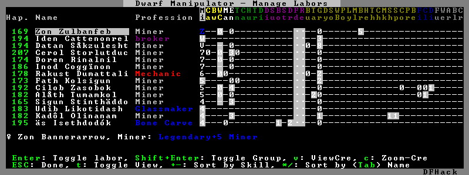
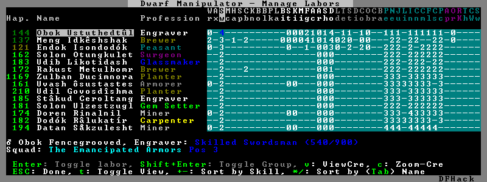
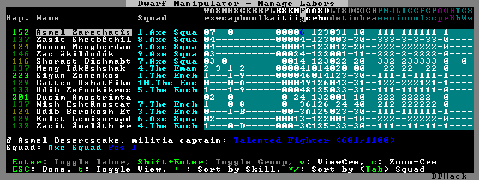

manipulator¶
It is equivalent to the popular Dwarf Therapist utility.
To activate, open the unit screen and press l.
Usage¶
enable manipulator

The far left column displays the unit’s name, happiness (color-coded based on its value), profession, or squad, and the right half of the screen displays each dwarf’s labor settings and skill levels (0-9 for Dabbling through Professional, A-E for Great through Grand Master, and U-Z for Legendary through Legendary+5).
Cells with teal backgrounds denote skills not controlled by labors, e.g. military and social skills.

Press t to toggle between Profession, Squad, and Job views.

Use the arrow keys or number pad to move the cursor around, holding Shift to move 10 tiles at a time.
Press the Z-Up (<) and Z-Down (>) keys to move quickly between labor/skill categories. The numpad Z-Up and Z-Down keys seek to the first or last unit in the list. Backspace seeks to the top left corner.
Press Enter to toggle the selected labor for the selected unit, or Shift+Enter to toggle all labors within the selected category.
Press the +- keys to sort the unit list according to the currently selected skill/labor, and press the */ keys to sort the unit list by Name, Profession/Squad, Happiness, or Arrival order (using Tab to select which sort method to use here).
With a unit selected, you can press the v key to view its properties (and possibly set a custom nickname or profession) or the c key to exit Manipulator and zoom to its position within your fortress.
The following mouse shortcuts are also available:
Click on a column header to sort the unit list. Left-click to sort it in one direction (descending for happiness or labors/skills, ascending for name, profession or squad) and right-click to sort it in the opposite direction.
Left-click on a labor cell to toggle that labor. Right-click to move the cursor onto that cell instead of toggling it.
Left-click on a unit’s name, profession or squad to view its properties.
Right-click on a unit’s name, profession or squad to zoom to it.
Pressing Esc normally returns to the unit screen, but ShiftEsc would exit directly to the main dwarf mode screen.
Professions¶
The manipulator plugin supports saving professions: a named set of labors that can be quickly applied to one or multiple dwarves.
To save a profession, highlight a dwarf and press P. The profession will be saved using the custom profession name of the dwarf, or the default profession name for that dwarf if no custom profession name has been set.
To apply a profession, either highlight a single dwarf or select multiple with x, and press p to select the profession to apply. All labors for the selected dwarves will be reset to the labors of the chosen profession and the custom profession names for those dwarves will be set to the applied profession.
Professions are saved as human-readable text files in the
dfhack-config/professions folder within the DF folder, and can be edited or
deleted there.
The professions library¶
The manipulator plugin comes with a library of professions that you can assign to your dwarves.
If you’d rather use Dwarf Therapist to manage your labors, it is easy to import these professions to DT and use them there. Simply assign the professions you want to import to a dwarf. Once you have assigned a profession to at least one dwarf, you can select “Import Professions from DF” in the DT “File” menu. The professions will then be available for use in DT.
In the list below, the “needed” range indicates the approximate number of dwarves of each profession that you are likely to need at the start of the game and how many you are likely to need in a mature fort. These are just approximations. Your playstyle may demand more or fewer of each profession.
Chef(needed: 0, 3)Butchery, Tanning, and Cooking. It is important to focus just a few dwarves on cooking since well-crafted meals make dwarves very happy. They are also an excellent trade good.
Craftsdwarf(needed: 0, 4-6)All labors used at Craftsdwarf’s workshops, Glassmaker’s workshops, and kilns.
Doctor(needed: 0, 2-4)The full suite of medical labors, plus Animal Caretaking for those using the dwarfvet plugin.
Farmer(needed 1, 4)Food- and animal product-related labors.
Fisherdwarf(needed 0, 0-1)Fishing and fish cleaning. If you assign this profession to any dwarf, be prepared to be inundated with fish. Fisherdwarves never stop fishing. Be sure to also run
prioritize -a PrepareRawFish ExtractFromRawFishor else caught fish will just be left to rot.
Hauler(needed 0, >20)All hauling labors plus Siege Operating, Mechanic (so haulers can assist in reloading traps) and Architecture (so haulers can help build massive windmill farms and pump stacks). As you accumulate enough Haulers, you can turn off hauling labors for other dwarves so they can focus on their skilled tasks. You may also want to restrict your Mechanic’s workshops to only skilled mechanics so your unskilled haulers don’t make low-quality mechanisms.
Laborer(needed 0, 10-12)All labors that don’t improve quality with skill, such as Soapmaking and furnace labors.
Marksdwarf(needed 0, 10-30)Similar to
Hauler. See the description forMeleedwarfbelow for more details.
Mason(needed 2, 2-4)Masonry and Gem Cutting/Encrusting.
Meleedwarf(needed 0, 20-50)Similar to
Hauler, but without most civilian labors. This profession is separate fromHaulerso you can find your military dwarves easily.MeleedwarvesandMarksdwarveshave Mechanics and hauling labors enabled so you can temporarily deactivate your military after sieges and allow your military dwarves to help clean up and reset traps.
Migrant(needed 0, 0)You can assign this profession to new migrants temporarily while you sort them into professions. Like
MarksdwarfandMeleedwarf, the purpose of this profession is so you can find your new dwarves more easily.
Miner(needed 2, 2-10)Mining and Engraving. This profession also has the
Alchemistlabor enabled, which disables hauling for those using the autohauler plugin. Once the need for Miners tapers off in the late game, dwarves with this profession make good military dwarves, wielding their picks as weapons.
Outdoorsdwarf(needed 1, 2-4)Carpentry, Bowyery, Woodcutting, Animal Training, Trapping, Plant Gathering, Beekeeping, and Siege Engineering.
Smith(needed 0, 2-4)Smithing labors. You may want to specialize your Smiths to focus on a single smithing skill to maximize equipment quality.
StartManager(needed 1, 0)All skills not covered by the other starting professions (
Miner,Mason,Outdoorsdwarf, andFarmer), plus a few overlapping skills to assist in critical tasks at the beginning of the game. Individual labors should be turned off as migrants are assigned more specialized professions that cover them, and the StartManager dwarf can eventually convert to some other profession.
Tailor(needed 0, 2)Textile industry labors: Dying, Leatherworking, Weaving, and Clothesmaking.
A note on autohauler¶
These profession definitions are designed to work well with or without the
autohauler plugin (which helps to keep your dwarves focused on skilled labors
instead of constantly being distracted by hauling). If you do want to use
autohauler, adding the following lines to your onMapLoad.init file will
configure it to let the professions manage the “Feed water to civilians” and
“Recover wounded” labors instead of enabling those labors for all hauling
dwarves:
on-new-fortress enable autohauler
on-new-fortress autohauler FEED_WATER_CIVILIANS allow
on-new-fortress autohauler RECOVER_WOUNDED allow